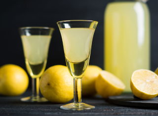

Назад
Ликёр "Лимончелло"
Блюда стран мира


28 дней

20 порций
Ингридиенты:
Лимоны - 600 гр
Водка - 700 мл
Вода (бутылированная) - 300 мл
Сахар - 450 гр
Пошаговый рецепт
- Подготовьте продукты по списку.
- Лимоны тщательно вымойте, обсушите полотенцем и снимите цедру. Делать это нужно аккуратно, захватывая только желтую кожуру. Это важно, так как попадание белого слоя придаст напитку горчинку. Снятую цедру уложите в стеклянную емкость.
- Цедру залейте водкой и оставьте на две недели в теплом месте. Емкость накройте тканью. Необязательно, чтобы место было темным, но и прямые солнечные лучи также не должны попадать на будущий ликер.
- Время прошло - процедите жидкость,стараясь полностью отжать цедру.
- Подогрейте воду, добавьте в нее сахар, перемешайте и доведите до кипения. После закипания варите сироп несколько минут, затем выключите огонь и содержимое кастрюли охладите.
- Самое интересное! Смешайте обе жидкости (лимонную и сахарный сироп), разлейте по бутылкам, плотно закройте и уберите в темное место настаиваться в течение недели-двух. После этого ликер можно подавать на стол.